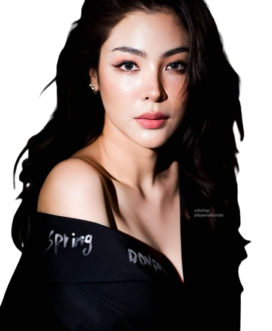
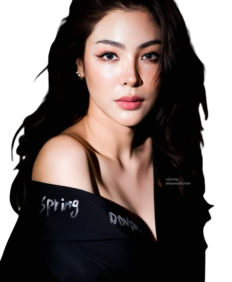
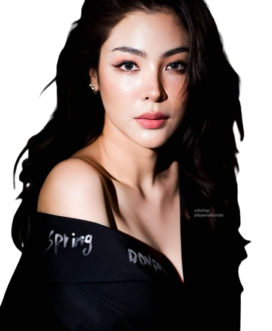

SCORE 0
Aline tá no rolê e a Faye Malisorn tá mirando nela! Corra e resgate sua garota antes que ela se perca no labirinto de charme e sedução da atriz tailandesa!
Pule a Faye Malisorn 10 vezes!
 

Aline tá no rolê e a Faye Malisorn tá mirando nela! Corra e resgate sua garota antes que ela se perca no labirinto de charme e sedução da atriz tailandesa!
Pule a Faye Malisorn 10 vezes!
